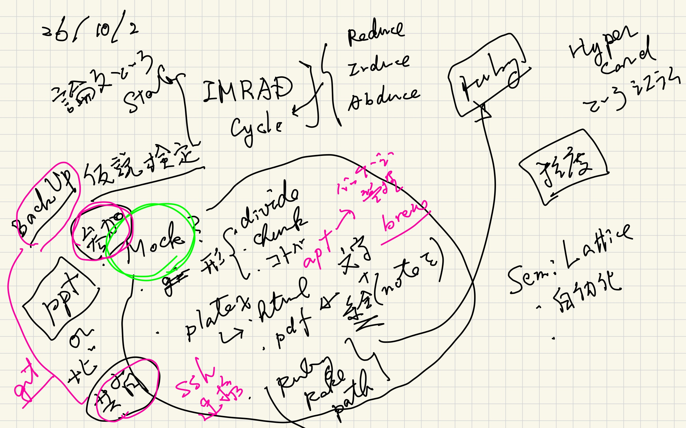
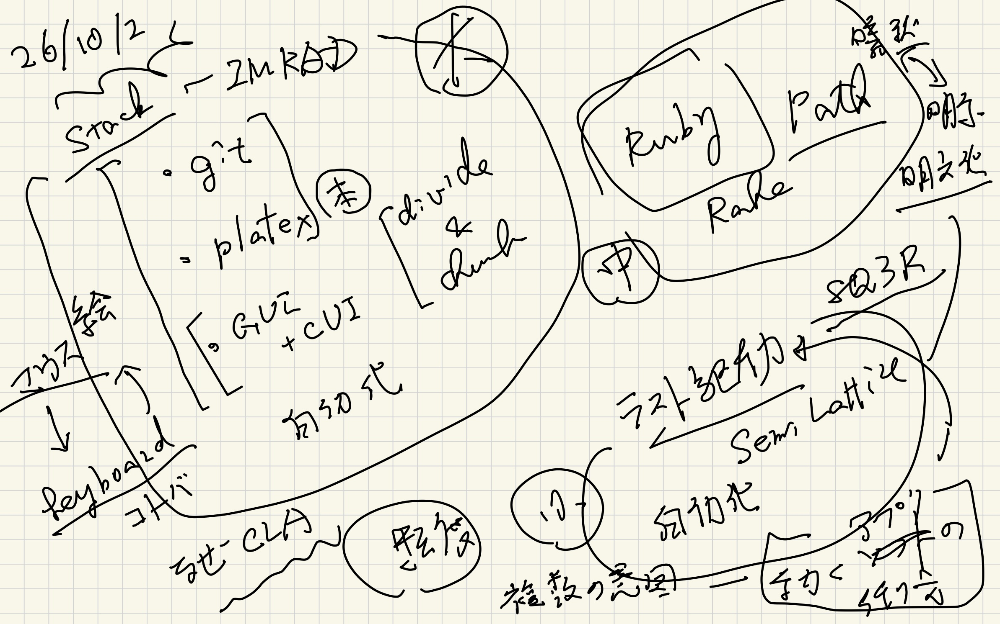

Results and Discussions : ppt and pdf
Table of Contents
prev_button up_button next_button
1. ppts
HyperCardのMockが今見ていただいている httpになります．
IconとかNaviとか，Actionが GUIとCUIでどのように実現されているか あるいはmockされているかを観察してください．
 |
 |
 |
 |
2. Pragmatic programmar (v2)
3. Why ruby?
さて，では，これらがどうやって実現されているか？ そしてeverday usersの手によってどのように 構築されるかを示すのが次の目的になります．
以下のテキストにはその必要性が書かれています．